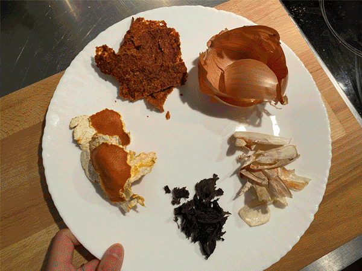
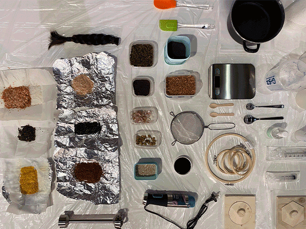
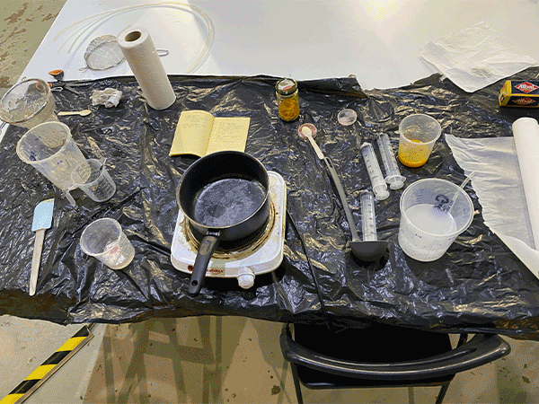
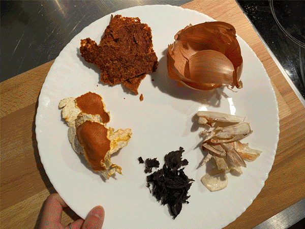
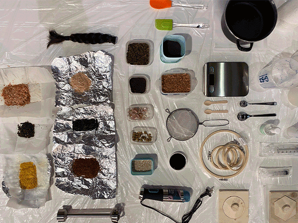
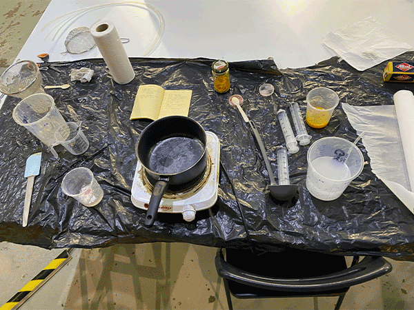

🗓 20 Jaunary 2022

Roberto, Ruben, Vikrant, Busi and I combined our materials as a group and experimented with three different recipes: agar/gelatin, alginate thread, and pine resin blocks. For the agar recipe, we added the nut shells that were donated by Borka, tangerine peels, and gold mica directly into the mixture. We thought the nut shells would be interesting to use because they had some fuzzy textures. And we decided to add the tangerine peels and mica for the color. For the alginate thread, we used a mixture of red and blue mica colorants, expecting there to be a gradient. But instead, the colors mixed and turned out as purple thread which was still beautiful. Lastly, for the pine resin, we made two different mixtures. One we used dehydrated kimchi pulp and the other we combined hair, kelp, wool, string. The second one turned out to be a mess, especially because we neglected to shred the hair beforehand.

I wanted to further explore extruding alginate threads with differet methods. During class, I observed that the syringe extrusion was turning out very thin and dried even thinner. I found a plastic tube that had about 2mm opening, and cut a piece of the tube to use it as an addition to the syringe during extrusion process. (I also played around with the seiving tool, and was able to extract small balls, but it turned out to be a mess to clean.) For the larger tube extrusions, I used three different colorants: tumeric, matcha, and pink mica, and two recipes: one with less gelatin to experiment with stiffness. I found with the larger tube, I had to leave the extrusion in the calcium chloride for a longer time in order for the insides to harden before taking it out to dry. I also noticed that the size of the bowl I was extruding into determined the shape of the thread. At first I started in a small bowl, which produced many twists and bends in the thread because it had to fit in a small area. Then I moved the calcium chloride solution into a larger pot and was able to achieve straighter lines of thread.

I returned to the biomaterial samples after a week, and found them to look very different from where they started. Especially the threads had dried and shrunked to a fraction of their size and the colors became much darker and less appealing. Some of the agar materials were craking and coming off of the edges of the mold. I realize it's not easy to create a desired consistancy and biomaterial, even when we're all following the same recipe.
🗓 31 Jaunary 2022 I joined Audrey, Gerda, and Paula's group in working with spent beer grains to create biomaterials. We received the spent grains from a brewery in Poblenou, and Gerda took them home to dry most of them on her patio. On Friday, we met up to experiment withe making paper from spent grains. We used the wet grains and followed a paper-making recipe we found online that used dried leaves, which is a different material but was as close as we could find.
First we ground the spent grains with water, then poured the mixture into a plastic bin. We used a few different molds with different sized nettings and fabric to lay this mixture on top of while the water drained and as we hoped, would eventually dry into a paper-like material. We made a few variables: one with just grain, one with paper mixed in, and another with just grain but reall finely ground. During this week, I contracted covid and wasn't able to participate in person for further explorations.

Remixing Materials: Bio Materials
After learning about various methods of creating biomaterials from food waste, we were given the task to bring our own waste for hands-on experimentation. I prepared shrimp shells, tangerine peels, green tea leaves, kelp, yellow onion peels, and kimchi pulp by cleaning, dehydrating in the oven, and blending them.
Roberto, Ruben, Vikrant, Busi and I combined our materials as a group and experimented with three different recipes: agar/gelatin, alginate thread, and pine resin blocks. For the agar recipe, we added the nut shells that were donated by Borka, tangerine peels, and gold mica directly into the mixture. We thought the nut shells would be interesting to use because they had some fuzzy textures. And we decided to add the tangerine peels and mica for the color. For the alginate thread, we used a mixture of red and blue mica colorants, expecting there to be a gradient. But instead, the colors mixed and turned out as purple thread which was still beautiful. Lastly, for the pine resin, we made two different mixtures. One we used dehydrated kimchi pulp and the other we combined hair, kelp, wool, string. The second one turned out to be a mess, especially because we neglected to shred the hair beforehand.

I wanted to further explore extruding alginate threads with differet methods. During class, I observed that the syringe extrusion was turning out very thin and dried even thinner. I found a plastic tube that had about 2mm opening, and cut a piece of the tube to use it as an addition to the syringe during extrusion process. (I also played around with the seiving tool, and was able to extract small balls, but it turned out to be a mess to clean.) For the larger tube extrusions, I used three different colorants: tumeric, matcha, and pink mica, and two recipes: one with less gelatin to experiment with stiffness. I found with the larger tube, I had to leave the extrusion in the calcium chloride for a longer time in order for the insides to harden before taking it out to dry. I also noticed that the size of the bowl I was extruding into determined the shape of the thread. At first I started in a small bowl, which produced many twists and bends in the thread because it had to fit in a small area. Then I moved the calcium chloride solution into a larger pot and was able to achieve straighter lines of thread.

I returned to the biomaterial samples after a week, and found them to look very different from where they started. Especially the threads had dried and shrunked to a fraction of their size and the colors became much darker and less appealing. Some of the agar materials were craking and coming off of the edges of the mold. I realize it's not easy to create a desired consistancy and biomaterial, even when we're all following the same recipe.
🗓 31 Jaunary 2022 I joined Audrey, Gerda, and Paula's group in working with spent beer grains to create biomaterials. We received the spent grains from a brewery in Poblenou, and Gerda took them home to dry most of them on her patio. On Friday, we met up to experiment withe making paper from spent grains. We used the wet grains and followed a paper-making recipe we found online that used dried leaves, which is a different material but was as close as we could find.
First we ground the spent grains with water, then poured the mixture into a plastic bin. We used a few different molds with different sized nettings and fabric to lay this mixture on top of while the water drained and as we hoped, would eventually dry into a paper-like material. We made a few variables: one with just grain, one with paper mixed in, and another with just grain but reall finely ground. During this week, I contracted covid and wasn't able to participate in person for further explorations.